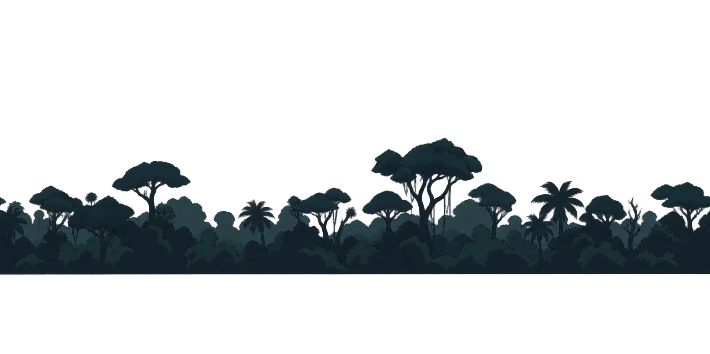
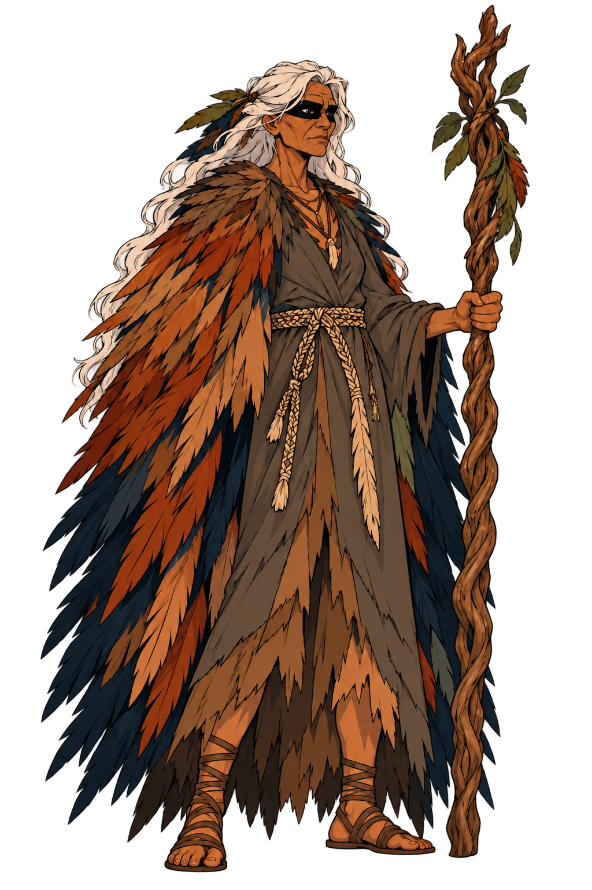
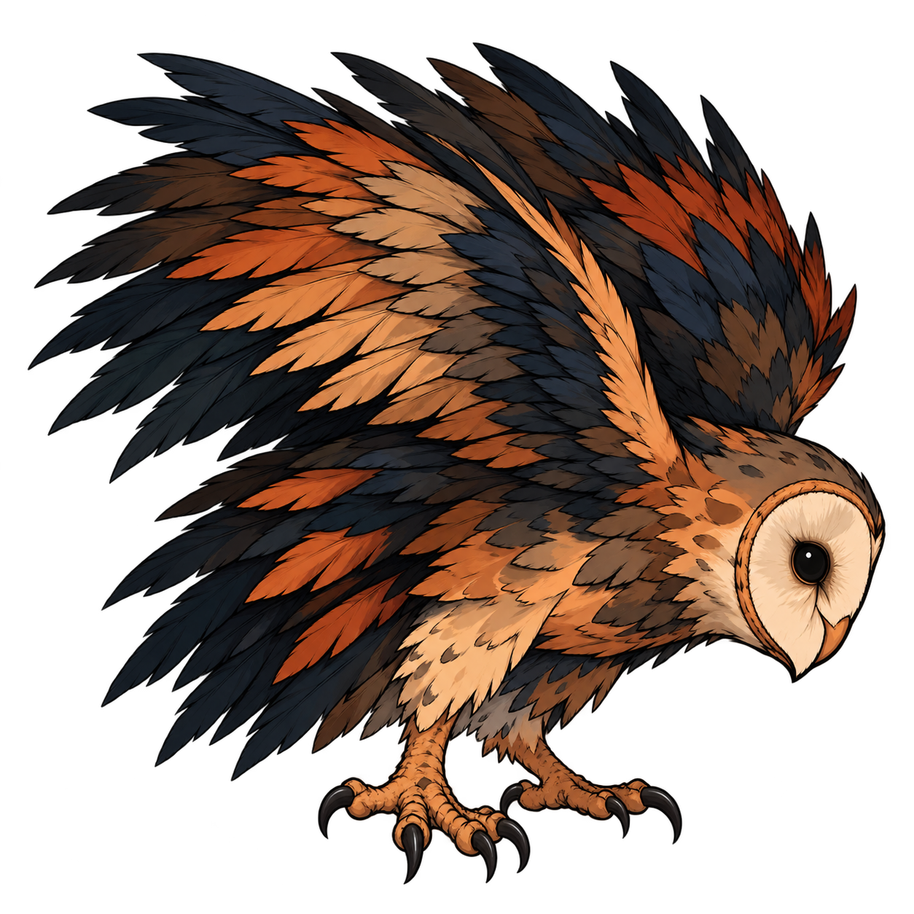
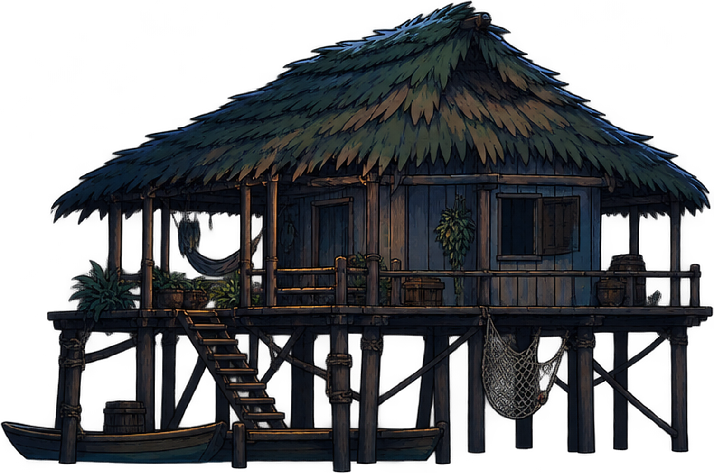
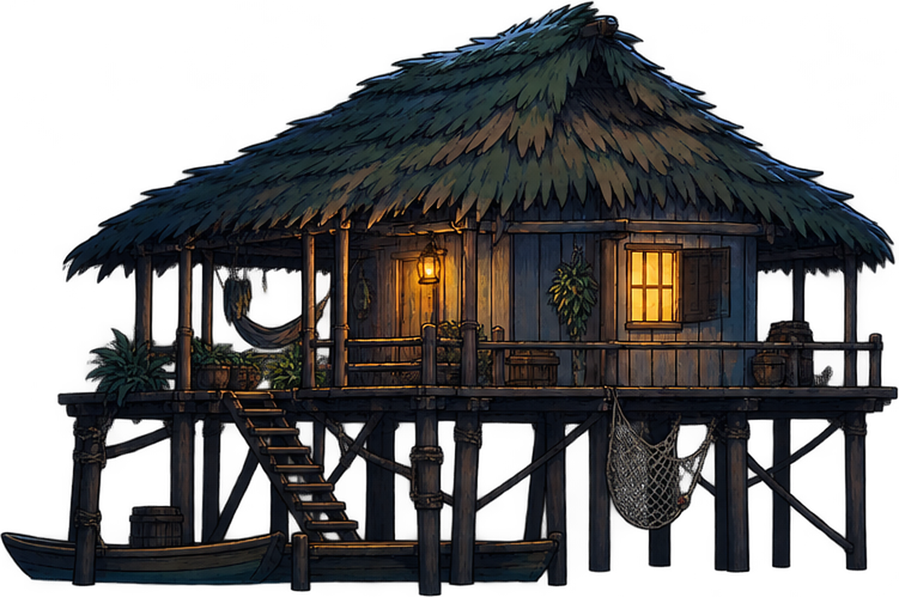
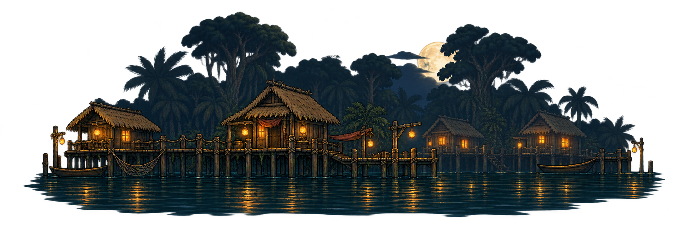

Jéssica Soares
Desenvolvedora
História: Jéssica Soares
Engenheira da computação formada pela UNIFESSPA, com oito anos de atuação como engenheira de software com foco em web. Trabalhou em projetos da Ambev e Petrobras.
UMA AVENTURA NARRATIVA BRASILEIRA

A noite escuta.
A promessa fica.
Uma aventura narrativa 2D entre a mata, o rio e as luzes de Marabá.
Entre nesta históriaA PALAVRA QUE ATRAVESSOU O TEMPO
Um homem cercado pela fumaça pede ajuda. Antes do resgate, dá sua palavra: nunca mais colocar fogo naquele território.
Matinta o guia até o rio. Anos depois, a fumaça retorna — e ela volta para cobrar a palavra que foi quebrada.

ENTRE O CHÃO E O CÉU
Caminhe com Matinta ou atravesse as águas e as rotas altas como Rasga-Mortalha.
Continue rolando para acompanhar a transformação.


À BEIRA DO RIO
Da comunidade ribeirinha às luzes de Marabá, encontre quem vive a noite. Assobie e veja quem responde.
A casa está em silêncio.



AS PESSOAS POR TRÁS DA HISTÓRIA
Entre criação, pesquisa e educação,
conheça quem constrói esta história.Toque nos retratos. Deslize para conhecer a equipe.
Desenvolvedora
Engenheira da computação formada pela UNIFESSPA, com oito anos de atuação como engenheira de software com foco em web. Trabalhou em projetos da Ambev e Petrobras.
Assistente de desenvolvimento e designer de som
Formada em Engenharia de Software pela Universidade do Estado do Pará e graduada em Administração pela Faculdade Anhanguera. Produtora cultural, fotógrafa, filmmaker e educadora popular.
Produtora cultural
Formada em Psicologia, empreendedora e proprietária do Espaço de Beleza Preta Chique. Atua como produtora cultural.
Coordenadora pedagógica
Professora de Matemática da rede pública na região de Carajás, licenciada pela Unifesspa, pós-graduanda em Metodologias do Ensino de Matemática pela Facuminas e graduanda em Computação pelo IFPA. Produtora cultural, articuladora social e integrante da Aurora Produções, desenvolve projetos que unem educação, tecnologia e patrimônio amazônico.
Pesquisadora
Graduada em Filosofia pela UNIASSELVI, discente de Artes Visuais na UNIFESSPA e especialista em Gestão de Biblioteca Escolar. Artesã e produtora cultural, integrante da Aurora Produções, desenvolve trabalhos que articulam artesanato e técnicas mistas, explorando materiais, processos criativos e práticas voltadas à arte, à cultura e à educação.
Pesquisadora
Bacharela e licenciada em Ciências Sociais pela Unifesspa. Produtora cultural e membra da Aurora Produções, atua como professora na rede municipal de Marabá. Fotógrafa, encontra no cotidiano, em suas falhas e frestas, matéria para seu olhar artístico.